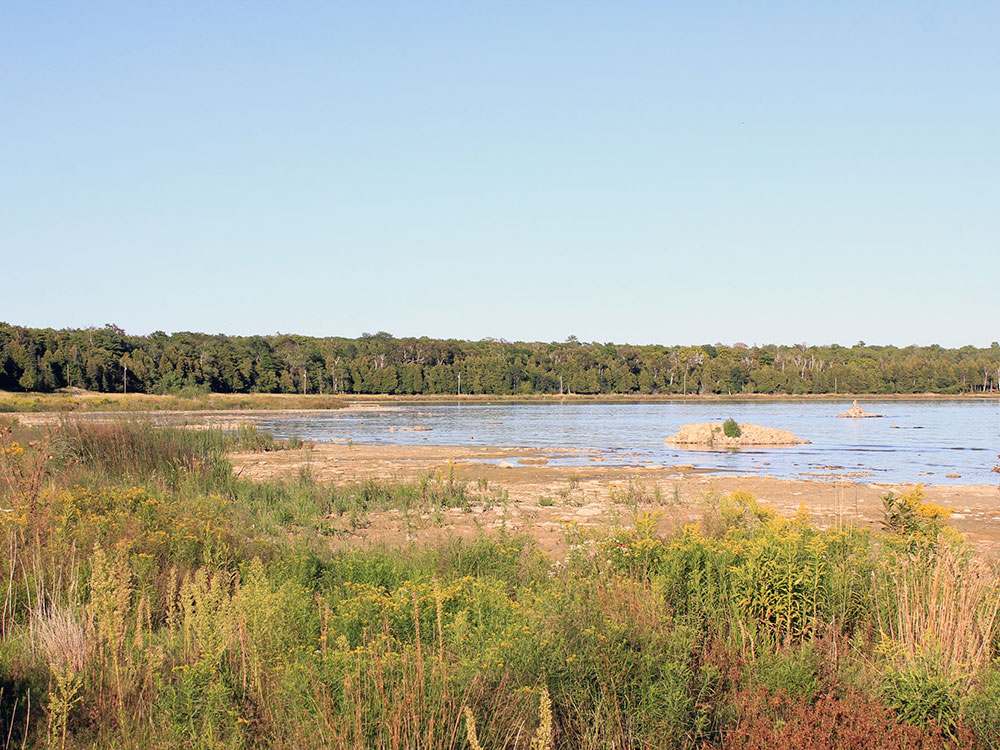
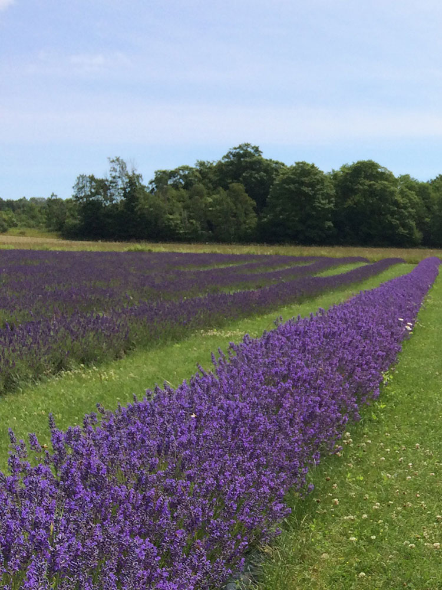

Island of Wisconsin situated in Lake Michigan, lying about 7 miles northeast of the tip of the Door Peninsula
General Information
How to Get There
From Sturgeon Bay, WI (45 mi to ferry): Take WI-42 N from Sturgeon Bay approximately 45 miles to Northport Pier at the tip of the Door Peninsula, then board the Washington Island Ferry for the 30-minute crossing to Washington Island.
Overview
Washington Island is an island of Wisconsin situated in Lake Michigan. Lying about 7 miles (11 km) northeast of the tip of the Door Peninsula, it is part of Door County, Wisconsin. It has a land area of 60.89 km² (23.51 sq mi) and comprises over 92 percent of the land area of the town of Washington, as well as all of its population. The unincorporated community of Detroit Harbor is situated on the island. It is the largest in a group of islands that includes Plum, Detroit, Hog, Pilot, Fish, and Rock Islands. These islands form the Town of Washington. Detroit Harbor bay is on the south side of the island.
Washington Island is approximately 5 miles (8 km) wide by 6 miles (10 km) long. Together with the Door Peninsula, Washington Island forms a treacherous strait that connects Green Bay to the rest of Lake Michigan. Early French explorers named this water way, now littered with shipwrecks, Porte des Morts, which literally means "Door of the Dead" or, more colloquially, "Death's Door", giving both Door County and Door Peninsula their names.
Washington Island hosts the Midwest region's largest lavender farm, accompanied by a biennial festival held in summer. Three parks and two beaches dot the island.
Overview
Washington Island is a scenic island destination located at the northern tip of Door County, Wisconsin. Situated beyond the famous Death's Door Passage in Lake Michigan, the island offers a quieter alternative to many Midwest vacation destinations. Visitors come to enjoy Schoolhouse Beach, the Stavkirke church, hiking trails, beaches, parks, local museums, waterfront scenery, and access to nearby Rock Island State Park. The island is approximately 22 square miles in size, making transportation an important consideration when planning a visit.
Most visitors arrive via the Washington Island Ferry from Northport Pier near Ellison Bay. Unlike some islands where cars are discouraged, transportation is generally recommended on Washington Island due to the distance between attractions. Visitors may bring their own vehicles, bicycles, or motorcycles on the ferry, while bicycle, moped, and UTV rentals are available near the ferry dock upon arrival.
Getting to Washington Island
| Transportation | Travel Time | Typical Adult Price | Overview |
|---|---|---|---|
| Washington Island Ferry | Approximately 30 Minutes | $16 Round Trip | Year-round passenger and vehicle ferry service between Northport Pier and Detroit Harbor on Washington Island. |
| Vehicle Ferry Service | Approximately 30 Minutes | $30 Per Vehicle (Occupants Additional) | Bring your own car, motorcycle, bicycle, RV, trailer, or camper to the island. |
| Rock Island Connection | Additional Short Ferry Ride | Separate Fare Required | Passengers can continue beyond Washington Island via the Karfi passenger ferry to Rock Island State Park. |
The Washington Island Ferry is the primary transportation link to the island and operates year-round. The passenger fare is approximately $16 round trip, making it one of the more affordable island ferry destinations in the Midwest. 【3-a753c0】
Getting Around Washington Island
| Transportation Method | Typical Cost | Best For |
|---|---|---|
| Personal Vehicle | Ferry Vehicle Charge Applies | Convenient access to attractions spread across the island. |
| Bicycle | $6 Ferry Fee Plus Rental Costs If Needed | Scenic exploration of the island's roads and parks. |
| Moped Rentals | $40-$80 Per Day | Exploring the island without bringing a vehicle. |
| UTV Rentals | $100-$200+ Per Day | Comfortable transportation for couples and families. |
| Cherry Train Tours | Varies | Guided sightseeing without requiring personal transportation. |
Because major attractions are spread across the island, visitors often bring their own vehicle or rent transportation upon arrival. Bicycling is also popular due to light traffic and scenic roads.
Popular Ways to Explore the Island
| Activity | Typical Price | Overview |
|---|---|---|
| Self-Guided Island Drive | Ferry and Vehicle Fees | Visit beaches, parks, museums, churches, and scenic overlooks at your own pace. |
| Bicycle Touring | $20-$50 Per Day | Explore quiet island roads, shoreline scenery, and local attractions. |
| Cherry Train Tour | Varies by Tour | Guided sightseeing tour covering the island's history, culture, and major landmarks. |
| Rock Island State Park Excursion | Additional Ferry Fare | Visit Wisconsin's remote island state park known for trails, beaches, and historic lighthouse. |
| Kayaking & Waterfront Exploration | Rental Costs Vary | Experience the island's shoreline, harbors, and Lake Michigan scenery. |
Must-Visit Attractions
- Schoolhouse Beach – One of the few smooth limestone beaches of its kind in the world.
- Washington Island Stavkirke – A replica Scandinavian wooden stave church.
- Mountain Park Lookout Tower – Elevated views of the island and surrounding waters.
- Washington Island Farm Museum – Preserves the island's agricultural heritage.
- Rock Island State Park – Accessible via a second ferry from Washington Island
- Island Beaches, Parks, and Nature Areas – Popular for hiking, birding, photography, and wildlife viewing.
Average Visitor Transportation Costs
| Category | Average Cost Per Person |
|---|---|
| Round-Trip Ferry Transportation | Approximately $16 |
| Bicycle Transportation on Ferry | Approximately $6 Round Trip |
| Vehicle Transportation on Ferry | Approximately $30 Per Vehicle |
| Bicycle Rental | Approximately $20-$50 Per Day |
| UTV or Moped Rental | Approximately $40-$200+ Per Day |
Best Option for First-Time Visitors
For most first-time visitors, the ideal experience is taking the Washington Island Ferry with a personal vehicle. Since attractions are spread throughout the island, having a vehicle provides the greatest flexibility for visiting Schoolhouse Beach, the Stavkirke, Mountain Park Lookout Tower, local museums, and the ferry connection to Rock Island State Park. Visitors seeking a slower-paced experience may instead bring or rent a bicycle and enjoy the island's lightly traveled roads.
Information in this article is based on transportation, schedules, fares, and visitor resources provided by the Washington Island Ferry Line, including the Washington Island Ferry Schedule and Rates page, as well as visitor information published by Door County tourism resources and Washington Island transportation guides.
This article uses material from the Wikipedia article "Washington Island (Wisconsin)", which is released under the Creative Commons Attribution-Share-Alike License 3.0


